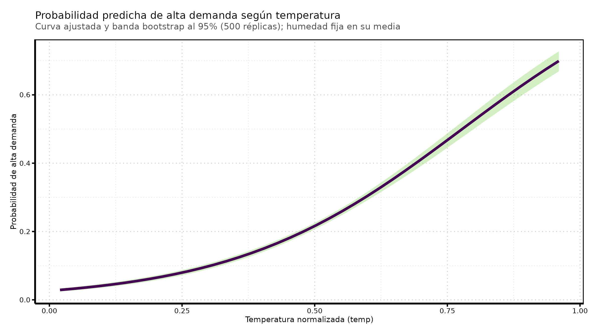

Práctica: Inferencia con Bootstrap en la Regresión Logística
Author
SOC3070 · Mauricio Bucca
Published
September 21, 2026
1. El modelo
Modelamos la probabilidad de que una hora tenga alta demanda (high_demand = 1: bikers por sobre el percentil 75) en función de la temperatura (temp) y la humedad (hum), ambas normalizadas entre 0 y 1:
Queremos la distribución muestral de alguna cantidad estimada. El bootstrap la aproxima sin fórmulas analíticas:
Tomamos una muestra del mismo tamaño que la original, con reemplazo.
Ajustamos el modelo en esa muestra.
Calculamos la cantidad de interés.
Repetimos \(B\) veces y miramos la distribución de los \(B\) resultados.
De esa distribución salen el error estándar (su desviación estándar) y el intervalo de confianza (sus percentiles 2.5 y 97.5).
Code
set.seed(20260921)B <-500# número de réplicas bootstrapn <-nrow(bikedata)
En las secciones que siguen repetimos ese mismo ciclo, cambiando solo el paso 3.
3. Bootstrap para un coeficiente: \(\beta_1\)
La cantidad de interés es el coeficiente de temp:
\[\hat{\beta}_1\]
Code
beta1_bs <-rep(NA, B) # acá guardamos el resultado de cada réplicafor (i in1:B) { filas <-sample(1:n, size = n, replace =TRUE) muestra <- bikedata[filas, ] ajuste <-glm(high_demand ~ temp + hum, family =binomial(link ="logit"), data = muestra) beta1_bs[i] <-coef(ajuste)["temp"]}head(beta1_bs)
Acá el bootstrap no era necesario: glm() ya entrega el error estándar de \(\hat{\beta}_1\) por máxima verosimilitud. Por eso mismo sirve de control: los dos métodos deberían coincidir.
Ahora la cantidad de interés es una transformación no lineal del coeficiente:
\[e^{\hat{\beta}_1}\]
que se interpreta como el factor por el que se multiplican las odds de alta demanda cuando temp aumenta en una unidad.
Acá ya no hay fórmula directa: el error estándar de \(e^{\hat{\beta}_1}\) no aparece en la tabla de glm(). La ruta analítica exige el método delta, \(\widehat{\text{SE}}(e^{\hat{\beta}_1}) \approx e^{\hat{\beta}_1}\,\widehat{\text{SE}}(\hat{\beta}_1)\), que es una aproximación y además impone simetría. El bootstrap no necesita ninguna de las dos cosas: basta aplicar exp() en el paso 3.
Code
or_bs <-rep(NA, B)for (i in1:B) { filas <-sample(1:n, size = n, replace =TRUE) muestra <- bikedata[filas, ] ajuste <-glm(high_demand ~ temp + hum, family =binomial(link ="logit"), data = muestra) or_bs[i] <-exp(coef(ajuste)["temp"])}or_hat <-exp(beta1_hat)ci_or <-quantile(or_bs, c(0.025, 0.975))c(estimacion = or_hat, se_bs =sd(or_bs), ci_or)
La distribución es asimétrica: la cola derecha es más larga y la estimación puntual no queda al centro del intervalo. El método delta no captura eso.
5. Bootstrap para el efecto marginal promedio de temp
El coeficiente \(\beta_1\) vive en la escala del logit. Para hablar en probabilidades necesitamos el efecto marginal, que en el modelo logístico depende del punto en que se evalúa:
Es una función no lineal de los tres coeficientes y de todos los datos. Su error estándar analítico es incómodo de derivar; con bootstrap es una línea más en el paso 3.
Code
ame_bs <-rep(NA, B)for (i in1:B) { filas <-sample(1:n, size = n, replace =TRUE) muestra <- bikedata[filas, ] ajuste <-glm(high_demand ~ temp + hum, family =binomial(link ="logit"), data = muestra) p <-predict(ajuste, type ="response") ame_bs[i] <-mean(coef(ajuste)["temp"] * p * (1- p))}p_hat <-predict(modelo, type ="response")ame_hat <-mean(beta1_hat * p_hat * (1- p_hat))ci_ame <-quantile(ame_bs, c(0.025, 0.975))c(estimacion = ame_hat, se_bs =sd(ame_bs), ci_ame)
Lectura: la pendiente promedio es 0.716 por unidad de temp, con IC 95% [0.676, 0.752]. Como temp está normalizada entre 0 y 1, una unidad es el rango térmico completo; un aumento de 0.1 en temp corresponde, en promedio, a unos 0.072 en probabilidad.
6. Bootstrap para una curva de predicciones
Hasta acá cada cantidad era un número. También puede ser un vector. Fijamos hum en su media y calculamos la probabilidad predicha a lo largo de una grilla de temperaturas:
Cada réplica bootstrap devuelve una curva completa. Guardamos las \(B\) curvas en una matriz: una fila por réplica, una columna por valor de la grilla.
Code
grilla <-tibble(temp =seq(min(bikedata$temp), max(bikedata$temp), length.out =40),hum =mean(bikedata$hum))curvas_bs <-matrix(NA, nrow = B, ncol =nrow(grilla))for (i in1:B) { filas <-sample(1:n, size = n, replace =TRUE) muestra <- bikedata[filas, ] ajuste <-glm(high_demand ~ temp + hum, family =binomial(link ="logit"), data = muestra) curvas_bs[i, ] <-predict(ajuste, newdata = grilla, type ="response")}dim(curvas_bs)
#> [1] 500 40
Code
# Percentiles columna por columna, es decir, punto a punto sobre la grillacurva_hat <- grilla %>%mutate(p =predict(modelo, newdata = grilla, type ="response"),low =apply(curvas_bs, 2, quantile, 0.025),high =apply(curvas_bs, 2, quantile, 0.975))ggplot(curva_hat, aes(x = temp, y = p)) +geom_ribbon(aes(ymin = low, ymax = high), fill = col_dist, alpha =0.35) +geom_line(colour = col_punto, linewidth =1.2) +labs(title ="Probabilidad predicha de alta demanda según temperatura",subtitle =paste0("Curva ajustada y banda bootstrap al 95% (", B," réplicas); humedad fija en su media"),x ="Temperatura normalizada (temp)",y ="Probabilidad de alta demanda")

La banda no tiene ancho constante: se abre en los extremos del rango de temp, donde hay menos observaciones.
También podemos mirar algunas curvas bootstrap sin resumirlas. Es la misma información, en crudo:
Code
# Pasamos 40 filas de la matriz a formato largo para graficarlasmuestra_curvas <- curvas_bs[1:40, ] %>%t() %>%as_tibble(.name_repair ="unique") %>%mutate(temp = grilla$temp) %>%pivot_longer(-temp, names_to ="rep", values_to ="p")ggplot(muestra_curvas, aes(x = temp, y = p)) +geom_line(aes(group = rep), colour = col_dist, alpha =0.3, linewidth =0.5) +geom_line(data = curva_hat, colour = col_punto, linewidth =1.2) +labs(title ="Curvas de predicción bootstrap",subtitle ="40 réplicas individuales y, destacada, la del modelo original",x ="Temperatura normalizada (temp)",y ="Probabilidad de alta demanda")
Las cuatro secciones corrieron el mismo ciclo. Lo único que cambió fue la línea que calcula la cantidad de interés:
Sección
Cantidad
Línea del paso 3
¿Hay fórmula analítica simple?
3
\(\hat{\beta}_1\)
coef(ajuste)["temp"]
Sí, la da glm()
4
\(e^{\hat{\beta}_1}\)
exp(coef(ajuste)["temp"])
No, requiere método delta
5
AME
mean(b1 * p * (1 - p))
No, incómoda
6
\(\hat{p}(\text{temp})\)
predict(ajuste, newdata = grilla)
No, y además es un vector
Pasar de una cantidad simple a una complicada no cambia el procedimiento ni su costo: ese es el atractivo del bootstrap.
Warning
Dos precauciones. La banda de la sección 6 es punto a punto: garantiza 95% de cobertura en cada temp por separado, no para la curva completa a la vez. Y el bootstrap por casos supone observaciones independientes; en bikedata, que son horas consecutivas, hay autocorrelación temporal, así que estos intervalos son algo optimistas.
8. Ejercicios
Repita la sección 3 para \(\beta_2\) (el coeficiente de hum). ¿Coincide el IC bootstrap con el de confint(modelo)?
Calcule por bootstrap el AME de hum y compárelo con marginaleffects::avg_slopes(modelo).
Baje B de 500 a 50 y rehaga la banda de la sección 6. ¿Qué se desestabiliza primero: el centro de la banda o sus bordes?
Estime por bootstrap la diferencia de probabilidad predicha entre temp en su percentil 90 y en su percentil 10. ¿Qué línea del loop de la sección 6 cambiaría?